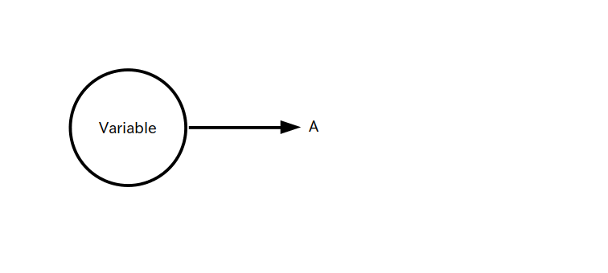
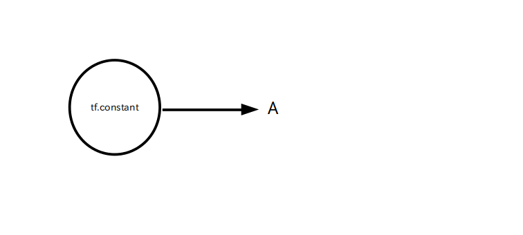

Python の関数として自作のオペレーションを定義することができます。
ただし関数定義の前に @tf.function デコレータを追加する必要があります。
書式:
@tf.function def オペレーション名(引数) (演算) return 戻り値 ※ @tf.function デコレータを関数定義の前につけるとパフォーマンスが上がりますが、ガイドラインに沿ってプログラムを書かないと予期しない動きをすることがあるので注意
例えば、以下の例では (a+b)*c の演算を行う myOP(a,b,c) というオペレーションを作成しています。
import tensorflow as tf
#自作オペレーション
@tf.function
def myOP(a, b, c):
return (a+b)*c
A = tf.constant( [1,2], dtype=tf.float32 )
B = tf.constant( [3,4], dtype=tf.float32 )
C = tf.constant( [5,6], dtype=tf.float32 )
D = myOP(A,B,C)
tf.print( D )
# 表示結果
# [20 36]
全体のデータフロー・グラフ
myOP 内部のデータフロー・グラフ
